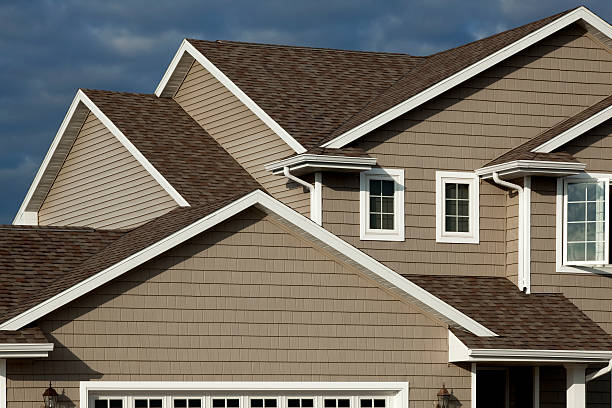
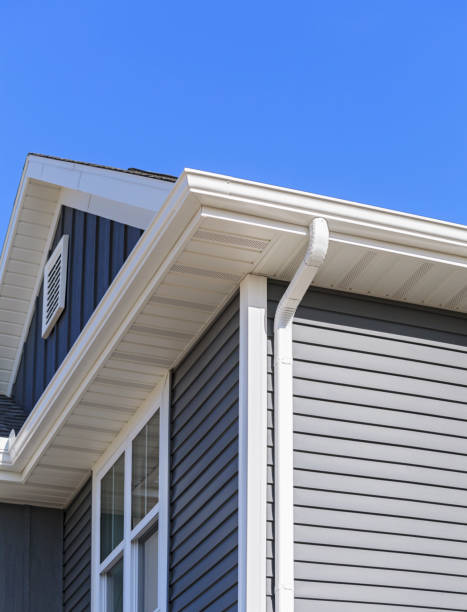
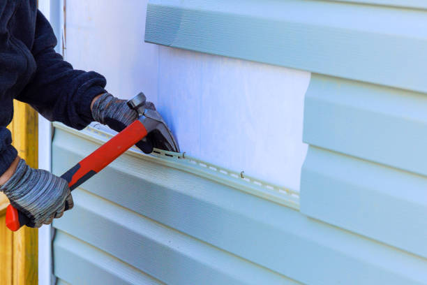

Transform your home's exterior with premium siding options in Lindale Georgia . Our professional team ensures long-lasting, low-maintenance results that enhance your home’s value and provide superior protection.
Click Here To Call Us (877) 848-1711At siding, we specialize in providing superior siding installation, repair, and replacement services across Lindale Georgia . Whether you're looking to enhance your home’s curb appeal, improve energy efficiency, or protect your property from the elements, our team of expert contractors is here to deliver top-notch solutions tailored to your needs.
Our Lindale Georgia siding services include a wide range of materials such as vinyl, wood, fiber cement, and more. We ensure that each installation is completed with precision, offering long-lasting protection against weather damage, moisture, and pests. With over years of experience, we pride ourselves on using only high-quality materials and industry-leading techniques to provide the best value to our clients.
Why choose us for your siding needs in Lindale Georgia ? We are committed to delivering exceptional craftsmanship, customer service, and timely project completion. Our team works closely with you to select the perfect siding material that suits both your style preferences and budget. We also offer expert advice on maintenance and care to keep your siding looking great year after year.
Ready to upgrade your home’s exterior? Contact siding today for professional siding services in Lindale Georgia . We’ll help you transform your home while ensuring durability and beauty for years to come.
Residential & commercial siding
Quality services at affordable prices
Immediate 24/ 7 emergency services


When selecting the best siding materials for homes in Lindale Georgia it's crucial to consider the unique climate characteristics of the area. Miami’s humid, salty, and storm-prone environment requires siding options that are not only durable but also weather-resistant. Here are the top siding materials ideal for Lindale Georgia 's climate:
1. Fiber Cement Siding
Fiber cement is a top choice for homeowners in Lindale Georgia due to its excellent durability and resistance to moisture, termites, and rot. This material is also highly resistant to hurricane-force winds, which are common in coastal areas. With proper maintenance, fiber cement siding can withstand the intense heat and humidity of Miami.
2. Vinyl Siding
Vinyl siding is a cost-effective and versatile option for homes in Lindale Georgia . It’s highly resistant to the effects of UV rays and moisture, preventing fading and mildew growth. Additionally, vinyl siding requires minimal maintenance and offers good insulation, which is a benefit in Miami’s hot summers.
3. Metal Siding
Metal siding, including aluminum and steel, is a fantastic option for Lindale Georgia homes. It’s fire-resistant, low-maintenance, and can withstand strong winds and saltwater exposure. Metal siding also provides a modern look, making it popular for contemporary home designs in Miami.
4. Stucco Siding
Stucco is another siding material well-suited for Lindale Georgia due to its ability to keep homes cool in the summer. It’s durable and resistant to the harsh elements, including heavy rains and high humidity. Stucco also enhances the aesthetic appeal of homes, providing a smooth, clean finish.
Choosing the right siding for your home in Lindale Georgia ensures long-lasting protection, enhances curb appeal, and contributes to energy efficiency. Whether you're renovating or building from the ground up, selecting the appropriate material for the Miami climate will help you save on maintenance costs and keep your home looking great year-round.
Residential & commercial siding
Quality services at affordable prices
Immediate 24/ 7 emergency services
Wood siding installation services is a great option for homeowners looking to achieve a classic and timeless look for their homes. Our company specializes in all aspects of wood siding installation, ensuring that your home not only looks beautiful but is also well-protected against the elements.
Wood siding offers exceptional aesthetic appeal, and with proper installation and maintenance, it can last for many years. Our experienced installers are skilled in working with various wood types, providing insights into the best options based on your home's architecture and your budget.
Choosing our wood siding installation services means choosing quality craftsmanship and a commitment to customer satisfaction. We take pride in our attention to detail and dedication to delivering a flawless installation that enhances your home’s beauty .

Maintaining your siding is crucial to ensuring its longevity and appearance. Our siding maintenance services are designed to keep your home’s exterior looking pristine and protected from environmental elements.
Regular maintenance helps in identifying any small issues before they escalate into costly repairs. Our services include cleaning, inspections, and minor repairs to ensure your siding stays in top-notch condition. With our team of experts, you can have peace of mind knowing that your home’s siding will last longer and maintain its beauty.

Supporting local businesses is vital for community growth, and our local siding company is proud to serve our neighbors. We offer a wide range of siding services, combining quality workmanship with a deep understanding of the local environment and community needs.
Choosing our local company means you’ll receive personalized service and tailored solutions. Our friendly team is always available to address your questions and concerns, ensuring a seamless experience from start to finish.
We prioritize customer satisfaction and community engagement, setting us apart from larger corporations. Trust your local siding experts and contact us today for all your siding needs!

As more homeowners become environmentally conscious, the demand for eco-friendly siding installation has risen. Our company offers a range of sustainable siding options in Lindale Georgia that not only look great but also minimize environmental impact.
We use eco-friendly materials that promote energy efficiency, reducing your carbon footprint while enhancing your home’s aesthetic appeal. Our team is knowledgeable about the latest sustainable practices and strives to incorporate them into every project we undertake.
Choosing eco-friendly siding means you're investing in the future of our planet while enjoying a beautiful home. Contact us today to learn more about our eco-friendly siding installation services!
Aluminum siding installation presents an excellent choice for homeowners seeking durability and low maintenance. Our expert team in Lindale Georgia specializes in aluminum siding installation tailored to withstand the unique weather conditions of your area while providing exceptional long-term performance.
Aluminum siding offers several benefits, such as resistance to insects and rot, longevity, and a wide range of finishes and colors. Our quality installation ensures that your aluminum siding not only enhances your property’s appearance but also protects against the harshest elements. We pride ourselves on delivering precise installations, ensuring you enjoy the full range of benefits that aluminum siding can offer for many years to come.
When selecting siding contractors, choosing ones that offer warranties provides added peace of mind. Our reputed team of siding experts in Lindale Georgia stands behind our work, offering comprehensive warranties on both the materials we use and our installation practices.
We believe in the quality of our workmanship and the enduring performance of the products we install. By offering warranties, we demonstrate our commitment to customer satisfaction and ensure you feel secure in your investment. Our transparent practices mean you know exactly what you can expect, making us the ideal choice among siding contractors in your area.

Our siding installation and repair services provide a complete solution for homeowners looking to enhance or restore their property's exterior. Whether you're planning a new siding installation or need repairs for your existing siding, our team of skilled professionals is here to help.
We offer a wide range of siding materials and styles to meet your needs, ensuring that you find the perfect solution for your home. Our commitment to quality workmanship and attention to detail ensures that every installation and repair project is completed to your satisfaction.
Choosing our siding installation and repair services means choosing a reliable partner for your home's exterior needs. We strive to exceed your expectations with quality materials and exceptional customer service in Lindale Georgia .

Your home’s exterior deserves the best, and our house siding installation services offer a range of beautiful and durable options to enhance its value and curb appeal. We work with you to select the right materials and design, ensuring that your vision becomes a reality.
Our team focuses on precision and quality craftsmanship, ensuring every installation is completed to the highest standards. We are dedicated to transforming your home’s exterior into a stunning showcase that not only protects but also elevates its overall aesthetic. Partner with us for professional privacy and impeccable results.
Years Experience
Expert Technicians
Satisfied Clients
Compleate Projects
At Best Roofing and Siding, we specialize in delivering top-quality siding solutions across Lindale Georgia ensuring your home is protected, stylish, and energy-efficient. With years of experience, we’ve built a reputation for excellence by offering durable, aesthetically appealing siding that enhances curb appeal and withstands the test of time.
We understand that your home is your most valuable asset. That's why we only use premium materials and work with skilled professionals to guarantee that every project is done right the first time. Whether you need vinyl, wood, or fiber cement siding, we offer a range of options to meet your specific needs and budget. Our team is dedicated to helping you choose the perfect siding that suits your home’s design, climate, and energy efficiency goals.
Our commitment to customer satisfaction sets us apart. We pride ourselves on transparent communication, competitive pricing, and timely project completion. Our experts will guide you through the process, ensuring minimal disruption to your daily routine.
In addition to enhancing your home's aesthetic, our siding options offer superior insulation, helping you save on energy costs throughout the year. With Best Roofing and Siding, you can rest assured knowing that your home is protected by the best materials and craftsmanship available in Lindale Georgia .
Choose Best Roofing and Siding for exceptional service, quality, and value that lasts. Contact us today for a free consultation and let us help transform your home.
When it comes to finding reliable siding contractors near me look no further! Our expert team specializes in various siding solutions tailored to meet your specific needs. We understand that every home is unique and requires unique care and attention. Our experience in the industry and commitment to high-quality craftsmanship sets us apart from the competition. Our skilled contractors utilize advanced techniques and high-quality materials to provide effective installations and repairs.
Homeowners in Lindale Georgia trust us for our exceptional customer service and superior results. By choosing us, you can rely on professionalism, integrity, and timely service. We are proud to be regarded as the best in the business, satisfying the unique needs of our clients in Lindale Georgia .
Searching for the best siding companies near you Your search ends here. Our company is renowned for exceptional siding services that combine quality craftsmanship with innovative solutions. We understand that the right siding can significantly enhance your home’s curb appeal while providing protection against the elements.
Our team consists of highly qualified professionals who have been trained in the latest installation techniques and safety standards. We take pride in our strong work ethic and commitment to customer service. Whether you're looking for vinyl, fiber cement, or wood siding, we offer a comprehensive range of options that suit every budget and preference.
We believe in transparent pricing and provide detailed estimates for our services to ensure you are informed every step of the way. Our reputation as the best siding company in Lindale Georgia is built on our dedication to excellence and customer satisfaction. Let us help you transform your property; contact us today to learn more!
Vinyl siding has become one of the most popular choices for homeowners in Lindale Georgia due to its durability, aesthetic appeal, and low maintenance requirements. Our vinyl siding installation services are second to none, thanks to our experienced team and high-quality materials.
When you choose us for your vinyl siding installation, you can expect meticulous craftsmanship that guarantees a perfect fit and finish. Our vinyl siding is available in a variety of colors and textures, allowing you to customize the look of your home. Energy efficiency is also a key benefit of our vinyl siding; it can significantly reduce your heating and cooling costs, making your home more comfortable year-round.
Moreover, our company stands out by ensuring that all installations adhere to local building codes and regulations . We work closely with our clients to ensure their vision for their home becomes a reality. Choose us for your vinyl siding installation, and enjoy a combination of quality, beauty, and innovation!
Many homeowners believe that quality siding comes at a premium price, but that is not the case with our affordable siding installation services . We believe that everyone deserves a beautiful and durable home without breaking the bank. Our competitive pricing, along with our dedication to quality, makes us the go-to choice for budget-conscious homeowners.
We offer a range of siding materials to fit every budget, ensuring that you can find the right option for your needs. Our experienced team works diligently to deliver results that you will love, all while keeping costs transparent and manageable. Trust us to provide an affordable solution that doesn’t compromise on quality or aesthetics.
Over time, your home's siding can become worn down or damaged due to weather elements or general wear and tear. Our siding repair services are designed to restore the look and integrity of your home, ensuring it remains both beautiful and functional. Whether you have cracks, warping, or mold growth, our team can identify the issue and provide effective solutions.
We specialize in a range of siding materials, and our experts are equipped with the skills and tools needed to make the necessary repairs. By choosing our siding repair services, you are securing the longevity of your home’s exterior, enhancing its curb appeal, and protecting your investment for years to come.
Investing in residential siding installation is one of the best improvements you can make as a homeowner. At our company, we cater to homeowners by providing customized siding solutions that match your personal style and meet your practical needs. Our team’s breadth of experience ensures you will receive the highest quality service and advice on the best materials suitable for your home.
Every residential siding installation project begins with a consultation to understand your design preferences, energy efficiency goals, and budget. We install a variety of siding materials, including vinyl, wood, and fiber cement, ensuring that you have various choices for your home. Our skilled technicians execute the installation process with precision, ensuring your siding not only enhances your property’s beauty but also offers excellent insulation and weather resistance.
If you’re looking for reliable commercial siding contractors in Lindale Georgia your search ends with our exceptional team. We understand that the exterior of your commercial property is just as important as its interior. A durable and appealing exterior can significantly impact your business's image, enhancing curb appeal and attracting customers.
Our team specializes in a variety of commercial siding solutions tailored to meet the unique needs of businesses. We work effectively with all types of materials, ensuring that your business is not only aesthetically pleasing but also protected against harsh weather conditions. We understand the time constraints commercial projects often face, which is why we prioritize efficiency without compromising quality.
Choose us for your commercial siding needs in Lindale Georgia and you’ll benefit from our experience, reliability, and commitment to delivering exceptional results on time and within budget. Our satisfied clients testify to our ability to enhance their business's exterior through quality siding solutions.
Searching for local siding installers who understand the specific needs of Lindale Georgia ? Our dedicated team is here to provide unparalleled siding services tailored to our community’s unique architectural styles and weather conditions. As local experts, we bring invaluable insights into the best materials and designs suited for your neighborhood’s aesthetic and climate.
Our local siding installers pride themselves on their craftsmanship and attention to detail. We value building relationships within the community and offer individualized service to ensure your project realization aligns with your vision. Our results speak for themselves; homeowners and businesses alike turn to us for reliable siding installation that not only beautifies properties but also fortifies them against environmental factors.
If your home needs siding replacement, our expert team is here to help. Over time, siding can degrade, fade, or get damaged to the point where replacement becomes necessary. Our siding replacement services are designed to restore your home's exterior and improve its overall look and functionality.
We offer a comprehensive range of siding materials, including vinyl, fiber cement, wood, and aluminum, allowing you to choose the best fit for your aesthetic and functional needs. Our skilled contractors provide detailed consultations to ensure you make an informed decision that adds value to your home.
Additionally, our siding replacement process is efficient and minimally disruptive, providing you with a beautiful new exterior in no time. With our commitment to high-quality workmanship and customer satisfaction, you can trust that your siding replacement needs will be handled with care and professionalism.
Understanding the cost of siding installation is crucial for any homeowner considering a siding project. Our company provides detailed siding installation cost estimates to help you plan your budget effectively. We believe in transparency, so you can expect no hidden fees or surprises when you work with us.
During our consultation, we assess your home and discuss your specific needs, allowing us to provide a tailored estimate that reflects your unique project scope. Our pricing is competitive, and we utilize top-notch materials to ensure you get the best value for your investment.
Moreover, we are happy to discuss financing options that may be available to make your siding installation affordable. Get in touch today for a free estimate and discover why we are the trusted choice for siding installation .
Your home is an expression of your personal style, and our custom home siding installation services allow you to make that vision a reality. Our experienced team will work closely with you to create a customized siding solution that aligns with your design preferences while adhering to your home’s architectural style.
From the initial consultation to the final installation, we prioritize your input, ensuring you are delighted with the results. We offer a variety of materials, colors, and finishes that allow for infinite customization, ensuring that your home stands out in the neighborhood.
Our commitment to quality ensures that every installation is secure, adding both beauty and value to your property. Discover the difference our custom siding installation can make; contact us today for more details!
Energy-efficient siding options are increasingly popular among homeowners looking to reduce their energy consumption and lower utility bills. Our company is at the forefront of providing siding solutions designed to enhance energy efficiency, ultimately leading to a more sustainable and cost-effective home.
We offer a range of siding materials that are specifically designed to provide better insulation and thermal protection. Here at our company, we understand the importance of creating a comfortable living environment while being conscious of energy use. Our experts will guide you in choosing the best energy-efficient siding options tailored to your home's architecture and climate requirements.
Choosing our energy-efficient siding services means investing in the long-term comfort and sustainability of your home. With our high-quality products and skilled installation services in Lindale Georgia you can rest assured that you're making an environmentally friendly choice that will benefit you for years to come.
Choosing the best siding materials is crucial for your home’s aesthetic and resilience. We offer a comprehensive selection of the best siding materials tailored to the needs of homeowners . From durable vinyl and fiber cement to traditional wood, we help you select the right material that aligns with your visual style and functional requirements.
Our experienced team understands that each siding material has its unique features and benefits. We provide expert guidance on the pros and cons of each option, ensuring you make an informed decision for your home. With our top-quality siding materials and expert installation services, your home will look stunning and stand strong against the elements for years to come.
If you're planning a new construction project, siding installation is an essential element to consider early in your planning process. Our siding installation services for new constructions are designed to ensure that your building starts on the right foot by incorporating high-quality, aesthetics-driven siding from the onset.
Our team collaborates with builders and architects to select siding materials that align with other construction features, ensuring a seamless integration while adhering to local building codes. We understand the importance of deadlines in new construction projects; thus, we prioritize timely completion without sacrificing quality. Our aim is to enhance the attractiveness and value of your new property while delivering functional and appealing siding solutions.
Your home deserves the best, and our siding and window installation services ensure that you get just that. As a complete exterior solution provider, we can enhance both your siding and windows, providing a cohesive and polished look to your property.
Both siding and windows play pivotal roles in maintaining your home’s energy efficiency and aesthetic appeal. With our experienced team, you can trust that both installations will be done with precision. We use high-quality materials and innovative techniques to ensure your new siding and windows are functional, energy-efficient, and beautiful.
Fiber cement siding is an excellent choice for homeowners seeking durability and aesthetic appeal. Our fiber cement siding installation services in Lindale Georgia utilize only the best materials and installation techniques to ensure your property is equipped to withstand the test of time.
This material offers exceptional resistance to weather, pests, and fire, making it one of the best options on the market. With various textures and colors available, fiber cement siding allows you to achieve the desired look for your home without compromising performance.
Our experienced team is dedicated to providing a flawless installation experience, ensuring that your new siding looks great and functions well for many years. If you’re considering fiber cement siding, reach out for an estimate today!
Are you in need of vinyl siding repair? Our vinyl siding repair services near me are designed to restore your home's exterior without compromising its integrity. Whether it’s due to weather damage, wear over time, or other issues, we can help bring your siding back to top shape.
We conduct thorough inspections to pinpoint any problems and provide effective solutions that do not require a full replacement. Trust in our experienced professionals to restore both the function and appearance of your vinyl siding, helping to maintain your home's value and beauty.
When it comes to enhancing the exterior of your home, siding is a top choice for homeowners in Lindale Georgia . Not only does it boost curb appeal, but it also offers numerous benefits that can increase the value and energy efficiency of your property.
Enhanced Protection Against the Elements
Living in Lindale Georgia homes face constant exposure to harsh weather, from intense sun to storms. Quality siding acts as a protective barrier against rain, wind, and UV rays, ensuring your home remains safe and structurally sound.
Improved Energy Efficiency
Siding provides insulation that helps maintain a comfortable indoor temperature year-round. It reduces the need for constant heating and cooling, leading to significant savings on energy bills for homeowners in Lindale Georgia .
Low Maintenance and Durability
Siding materials, such as vinyl, fiber cement, and engineered wood, are designed to be low-maintenance. These materials resist fading, cracking, and rotting, making them ideal for the Lindale Georgia climate, where moisture and temperature fluctuations are common.
Increased Home Value
Investing in new siding can increase the resale value of your home in Lindale Georgia . A well-maintained exterior gives potential buyers confidence in the quality of the property, making it a smart financial decision.
Variety of Styles and Finishes
Whether you're looking for a modern, traditional, or rustic look, siding comes in a variety of styles and finishes to match your home's aesthetic. Homeowners in Lindale Georgia can choose from a wide range of colors and textures that complement their architectural design.
Upgrade your home with durable, energy-efficient siding today. Contact us to learn more about how siding can benefit your Lindale Georgia property!
Lindale is an unincorporated community and census-designated place (CDP) in Floyd County, Georgia, United States. It is part of the Rome, Georgia Metropolitan Statistical Area. The population was 4,191 at the 2010 census.
Yes, certain siding materials provide soundproofing benefits, making your Lindale Georgia home quieter.
We offer design consultations to help you pick a siding color that complements your Lindale Georgia home's exterior.
Siding replacement increases your home's value and offers long-term benefits, making it a great investment in Lindale Georgia .
We assist homeowners in Lindale Georgia with insurance claims for siding repairs or replacement.
Siding enhances your home’s curb appeal, improves energy efficiency, and provides excellent protection against Lindale Georgia 's weather conditions.
Best Roofing and Siding provides siding installation, repair, and replacement services tailored to meet the needs of homeowners .
Call or visit our website to schedule your siding service with Best Roofing and Siding in Lindale Georgia .
Yes, durable siding materials like fiber cement can shield your Lindale Georgia home from storm damage.
Most siding lasts 20-40 years, but exposure to Lindale Georgia 's weather can influence its longevity.
Fiber cement siding is an excellent choice for Lindale Georgia offering durability, fire resistance, and a stylish appearance.
Yes, properly installed siding acts as an insulator, reducing energy costs in Lindale Georgia .
Vinyl siding can last 20-40 years with proper maintenance in Lindale Georgia .
Contact Best Roofing and Siding for a free consultation and estimate to begin your project .
Yes, Best Roofing and Siding offers warranties on both materials and workmanship for all siding projects .
Absolutely! We offer a variety of colors, styles, and materials to match your preferences and complement your Lindale Georgia home.
The timeline depends on the size of your home and the siding material chosen, but most projects in Lindale Georgia are completed within a few days.
We recommend vinyl, fiber cement, and wood siding for Lindale Georgia homes due to their durability and weather resistance.
Yes, we provide free, no-obligation estimates for all siding projects .
Yes, Best Roofing and Siding offers siding services for both residential and commercial properties .
Fiber cement and vinyl siding are highly durable options, designed to withstand Lindale Georgia 's weather conditions.
Yes, we work to find the closest match to your existing siding color for seamless repairs or additions in Lindale Georgia .
Vinyl siding is a cost-effective and durable choice for homes .
Cracks, warping, fading, and increased energy bills are common signs your siding may need replacement .
Yes, we offer sustainable siding materials such as fiber cement and engineered wood for Lindale Georgia homes.
The cost varies based on the material and size of your project. Contact Best Roofing and Siding for a detailed quote.
Regular cleaning and inspections for damage can help keep your siding in top condition .
Our experts will assess your needs, recommend materials, and provide a detailed quote for your Lindale Georgia siding project.
Yes, we specialize in repairing all types of siding to restore the beauty and functionality of your Lindale Georgia home.
Yes, our team is equipped to install siding in all seasons, including winter in Lindale Georgia .
Yes, we handle the removal of old siding and ensure proper preparation for new installation .
Best Roofing and Siding exceeded my expectations with their siding services in Lindale Georgia [State Abbreviation]. Their attention to detail and quality workmanship truly set them apart. My house has never looked better. I highly recommend them to anyone looking for reliable siding installation.
Profession
Best Roofing and Siding made the process of getting new siding on my home in Lindale Georgia [State Abbreviation] seamless. They were professional, timely, and the finished product exceeded my expectations. I couldn’t be more pleased with their work!
Profession
I’m so glad we chose Best Roofing and Siding for our siding installation in Lindale Georgia [State Abbreviation]. They were professional, friendly, and provided excellent quality. Our house looks amazing, and I would definitely use them again!
Profession